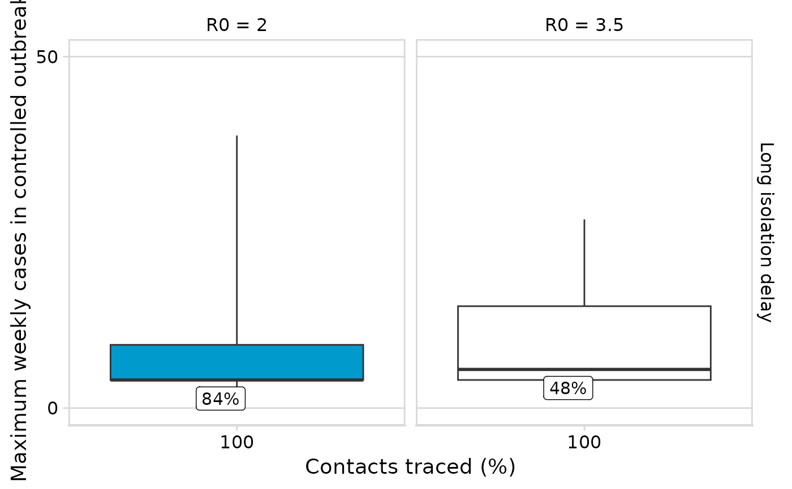

R/box_plot_max_weekly_cases.R
box_plot_max_weekly_cases.RdCreate box plots of maximum weekly cases by scenario
box_plot_max_weekly_cases(
results = NULL,
cap_cases = 5000,
extinct_thresold = 0.1,
theta_value = "15%",
prop_asym = 0,
facet_scales = "fixed",
filt_control_effectiveness = 0.4,
flip_coords = FALSE,
num_initial_cases = 20,
record_params = FALSE,
y_lim = NULL
)results of the branching model in a data.frame or tibble
the maximimum number of cases per outbreak scenario; default is 5000
filters the minimum proportion of simulations that become extinct per scenario; default 0.8
A Character string defaulting to "15%". Determines the proportion of infections that occur prior to sypmtom onset.
A numeric string defaulting to 0. Filters the proportion of infectiouns are asymptomatic
passed to facet_grid’s scales parameter; default is "fixed"
filters by the minimum control effectiveness proportion; default is 0.4
flip coordinates of the box plot; default is FALSE
filters by the number of initial cases in the scenario; default is 40
option to display the params as a caption (used for testing); default FALSE
Numeric the limit of the y axis to show.
scenarios <- tidyr::expand_grid(
## Put parameters that are grouped by disease into this data.frame
delay_group = list(tibble::tibble(
delay = c("Wuhan"),
delay_shape = c(2.305172),
delay_scale = c(9.483875)
)),
k_group = list(tibble::tibble(
theta = c("<1%", "30%"),
k = c(30, 1.95)
)),
index_R0 = c(3.5, 2),
prop.asym = c(0.1),
control_effectiveness = seq(0.2),
num.initial.cases = c(5),
quarantine = c(FALSE)) %>%
tidyr::unnest("k_group") %>%
tidyr::unnest("delay_group") %>%
dplyr::mutate(scenario = 1:dplyr::n())
## Parameterise fixed paramters
sim_with_params <- purrr::partial(ringbp::scenario_sim,
cap_max_days = 100,
cap_cases = 100,
r0isolated = 0,
disp.iso = 1,
disp.com = 0.16)
## Run paramter sweep
sweep_results <- ringbp::parameter_sweep(scenarios,
sim_fn = sim_with_params,
samples = 50,
show_progress = TRUE)
#> Warning: There were 4 warnings in `dplyr::mutate()`.
#> The first warning was:
#> ℹ In argument: `sims = furrr::future_map(...)`.
#> Caused by warning:
#> ! UNRELIABLE VALUE: Future (‘<none>’) unexpectedly generated random numbers without specifying argument 'seed'. There is a risk that those random numbers are not statistically sound and the overall results might be invalid. To fix this, specify 'seed=TRUE'. This ensures that proper, parallel-safe random numbers are produced via the L'Ecuyer-CMRG method. To disable this check, use 'seed=NULL', or set option 'future.rng.onMisuse' to "ignore".
#> ℹ Run `dplyr::last_dplyr_warnings()` to see the 3 remaining warnings.
box_plot_max_weekly_cases(sweep_results, cap_cases = 100, theta_value = "<1%",
prop_asym = c(0.1), filt_control_effectiveness = seq(0.2),
num_initial_cases = c(5), y_lim= 50)
